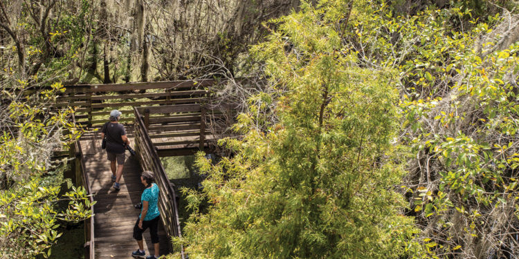
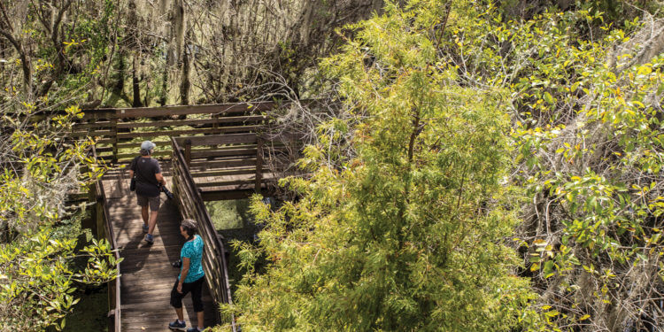
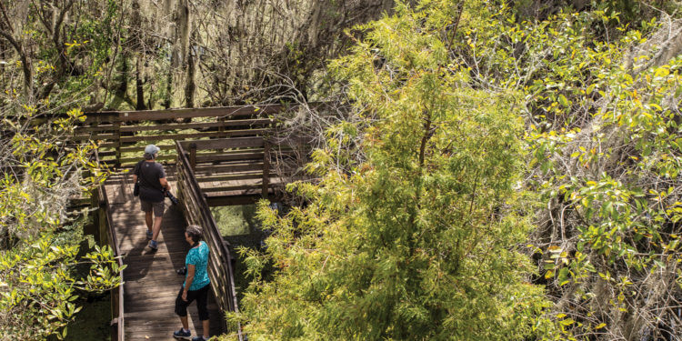

Descubre por qué los puntos verdes, parques y áreas naturales sn tan importantes para la ciudad de Medellin. Sumérgete en la biodiversida única que ofrecen estos espacios y disfruta la conexión con la naturaleza en tu vida diaria

Normas de Ecología
En Medellín nos encontramos con un gran numero de puntos de ecología. Estos puntos de ecología son especialmente destacados por su excelente calidad, la calidad de los productos y la calidad de los servicios.
Sin embargoes importante tener en cuenta las normas para mantener el entorno ecológico en óptimas condiciones.
Respetar la flora y fauna
Evitar tocar, recolectar o dañar plantas y animales en su hábitat natural
No arrojar basuras
Utilizar los contenedores adecuados y dejar los espacios limpios.
Seguir los senderos designados
Caminar solo por las áreas permitidas para preservar la vegetación y evitar la erosión.
No alimentar los animales
Evita darles comida a los animales para prevenir dependencias y alterar su comportamiento natural.
No hacer fuego
Prohibido encender fogatas o usar dispositivos de calefacción, especialmente en areas no designadas.
Controlar las mascotas
En caso de permitirse, mantener a las mascotas bajo control y recoger sus excrementos.
Respetar señales y normativas
Seguir las indicaciones y reglamentos establecidos para garantizar la seguridad y conservacion del área
No hacer ruido excesivo
Mantener un nivel de ruido bajo para no perurbar la fauna ni a otros visitantes
Ser responsable con el agua y energía
Utilizar los recursos naturales de manera consciente y evitar desperdiciar agua y energía

 
